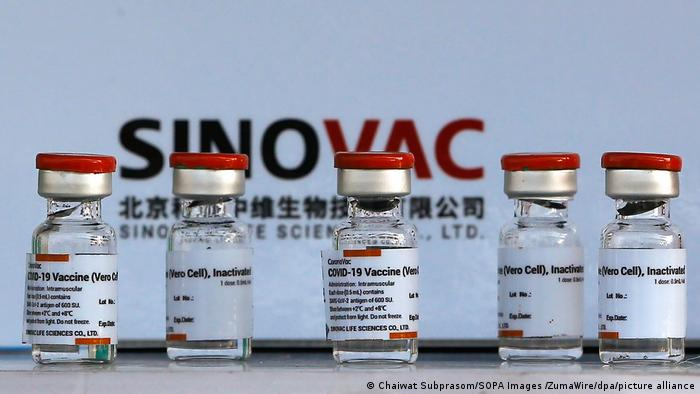

Vaccination is a simple, safe, and effective way of protecting people against harmful diseases, before they come into contact with them. It uses your body’s natural defenses to build resistance to specific infections and makes your immune system stronger.
Vaccines train your immune system to create antibodies, just as it does when it’s exposed to a disease. However, because vaccines contain only killed or weakened forms of germs like viruses or bacteria, they do not cause the disease or put you at risk of its complications. Most vaccines are given by an injection, but some are given orally (by mouth) or sprayed into the nose.
Vaccination is a safe and effective way to prevent disease and save lives – now more than ever. Today there are vaccines available to protect against at least 20 diseases, such as diphtheria, tetanus, pertussis, influenza and measles. Together, these vaccines save the lives of up to 3 million people every year.
When we get vaccinated, we aren’t just protecting ourselves, but also those around us. Some people, like those who are seriously ill, are advised not to get certain vaccines – so they depend on the rest of us to get vaccinated and help reduce the spread of disease.
During the COVID-19 pandemic, vaccination continues to be critically important. The pandemic has caused a decline in the number of children receiving routine immunizations, which could lead to an increase in illness and death from preventable diseases. WHO has urged countries to ensure that essential immunization and health services continue, despite the challenges posed by COVID-19
Vaccines reduce risks of getting a disease by working with your body’s natural defenses to build protection. When you get a vaccine, your immune system responds. It:
1. Recognizes the invading germ, such as the virus or bacteria.
2. Produces antibodies. Antibodies are proteins produced naturally by the immune system to fight disease.
3. Remembers the disease and how to fight it. If you are then exposed to the germ in the future,
your immune system can quickly destroy it before you become unwell.
The vaccine is therefore a safe and clever way to produce an immune response in the body, without causing illness.
Our immune systems are designed to remember. Once exposed to one or more doses of a vaccine, we typically remain protected against a disease for years, decades or even a lifetime. This is what makes vaccines so effective. Rather than treating a disease after it occurs, vaccines prevent us in the first instance from getting sick.
All the ingredients of a vaccine play an important role in ensuring a vaccine is safe and effective. Some of these include:
1. The antigen. This is a killed or weakened form of a virus or bacteria, which trains our bodies to recognize and fight the disease if we encounter it in the future.
2. Adjuvants, which help to boost our immune response. This means they help vaccines to work better.
3. Preservatives, which ensure a vaccine stays effective.
4. Stabilisers, which protect the vaccine during storage and transportation.
Vaccine ingredients can look unfamiliar when they are listed on a label. However, many of the components used in vaccines occur naturally in the body, in the environment, and in the foods we eat. All of the ingredients in vaccines – as well as the vaccines themselves - are thoroughly tested and monitored to ensure they are safe.
Without vaccines, we are at risk of serious illness and disability from diseases like measles, meningitis, pneumonia, tetanus and polio. Many of these diseases can be life-threatening. WHO estimates that vaccines save between 2 and 3 million lives every year.
Although some diseases may have become uncommon, the germs that cause them continue to circulate in some or all parts of the world. In today’s world, infectious diseases can easily cross borders, and infect anyone who is not protected
Two key reasons to get vaccinated are to protect ourselves and to protect those around us. Because not everyone can be vaccinated – including very young babies, those who are seriously ill or have certain allergies – they depend on others being vaccinated to ensure they are also safe from vaccine-preventable diseases.
Vaccines protect against many different diseases, including:
1. Cervical cancer
2. Cholera
3. COVID-19
4. Diphtheria
5. Hepatitis B
6. Influenza
7. Japanese encephalitis
8. Measles
9. Meningitis
10. Mumps
11. Pertussis
12. Pneumonia
13. Polio
14. Rabies
15. Rotavirus
16. Rubella
17. Tetanus
18. Typhoid
19. Varicella
20. Yellow fever
Some other vaccines are currently under development or being piloted, including those that protect against Ebola or malaria, but are not yet widely available globally.
Not all of these vaccinations may be needed in your country. Some may only be given prior to travel, in areas of risk, or to people in high-risk occupations. Talk to your healthcare worker to find out what vaccinations are needed for you and your family.
The Covid-19 Vaccines In Malaysia's National Vaccination Programme
Astra Zeneca
|
| Country of origin |
Total no. of doses ordered |
Type |
-
- UK
- 12.8 million
- The AstraZeneca vaccine is a viral vector vaccine, jointly produced by UK-based pharmaceutical company AstraZeneca and Oxford University. It uses a modified virus to deliver a small portion of the virus' genetic code to the body's cells, teaching them to produce the spike protein found in the coronavirus and build an immune response to it. This vaccine must also be administered in two doses and has an efficacy rate of 62 per cent to 90 per cent.
| | |
Pfizer
 |
| Country of origin |
Total no. of doses ordered |
Type |
-
- US
- 32 million
- Pfizer-BioNTech is a messenger RNA or mRNA vaccine which instructs the body's cells to produce a protein that triggers an immune response. A Covid-19 mRNA vaccine teaches our cells to produce a 'spike protein' which is found on the surface of the coronavirus. The body's immune system then recognises this protein and develops an antibody to protect against it. Unlike traditional vaccines, this type contains only synthetic components, not a live virus.
Pfizer-BioNTech boasts an efficacy of 95 per cent and must be administered in two doses. However, storage and logistics for this particular vaccine are costly as the doses must be kept in a special cold environment with a temperature of -75°C.
| | |
Sinovac
|  |
| Country of origin |
Total no. of doses ordered |
Type |
-
- China
- 12 million
-
The Sinovac vaccine is an inactivated vaccine, which means it uses killed virus particles to trigger the body's immune response to a virus. Suitable for those with weak immune systems, Sinovac's vaccine has an efficacy of 50.4 per cent to 91.25 per cent.
| | |